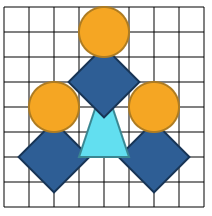

<!DOCTYPE html>
<html dir="rtl" align="right"></html>
<html>
<head>
   <meta charset="utf-8">
   <title>2022-FR-05-shape-building</title>
   <script>
      window.stringsLanguage = 'fa';
	  var enableRtl = true;
   </script>
   <script class="remove" type="text/javascript" src="../../../_common/modules/pemFioi/importModules-1.1_M.js" id="import-modules"></script>
   <script class="remove" type="text/javascript">
      var modulesPath = '../../../_common/modules';
      importModules([
         'jquery-1.7.1', 'jquery-ui.touch-punch', 'raphael-2.2.1', 'JSON-js', 'grid-1.1',
         'beav-1.0', 'beaver-task-2.0', 'simulation-2.0', 'raphaelFactory-1.0',
         'delayFactory-1.0', 'simulationFactory-1.0', 'button-1.0',
         'platform-pr', 'installationAPI.01', 'miniPlatform',
         'randomGenerator-1.0', 'shape-paths-1.1', 'responsiveDOMConverter','fonts-loader-1.0', 'loader-buttonsAndMessages'
      ]);
   </script>
   <script type="text/javascript">
      var respEnabled = Beav.Navigator.supportsResponsive();
      // var respEnabled = false;
      if(respEnabled){
         importModules(['buttonsAndMessages_resp','taskStyles-0.3_M']);
         window.FontsLoader.loadFonts(['fontawesome']);
         task.getMetaData = function(cb) { cb({nbHints: 0, autoHeight: true}); }
      }else{
         importModules(['buttonsAndMessages','taskStyles-0.1']);
      }
   </script>

   <script class="remove" type="text/javascript">
    var json = {
       "id": "http://castor-informatique.fr/tasks/2022/2022-FR-05-shape-building/",
       "language": "en",
       "version": "en.01",
       "authors": "TODO",
       "translators": ["TODO"],
       "license": "CC BY-SA 3.0",
       "taskPathPrefix": "",
       "modulesPathPrefix": "",
       "browserSupport": [],
       "fullFeedback": true,
       "acceptedAnswers": [],
       "usesRandomSeed": false
   };
   </script>
   <script type="text/javascript">
      var taskStrings = {
         introTitle: "ماموریت شما",
		 missingError: "شکلی که در دایره قرمز است در هدف وجود ندارد.",
		 extraError: "شکلی که در دایره قرمز است با هدف مطابقت ندارد.",
		 suboptimal: function(level) {
				var str = "<p>شما موفق شده‌اید، اما می‌توانید با گام‌های کمتری انجام دهید.</p>";
				if (level == "basic") {
						str += "<p>برای این کار، این شکل را بسازید و به کتابخانه اضافه کنید: </p><center></center>";
				}

				str += "<p>برای تلاش مجدد روی راه‌اندازی مجدد کلیک کنید.</p>";

				return str;

		},
        success: "تبریک می‌گویم، شما موفق شدید!",
		moveLimit: "حداکثر تعداد اشکال مجاز را قرار داده‌اید. می‌توانید بعضی اشکال قرار داده شده را برگشت کنید یا از اول شروع کنید.",
		undo: "برگشت",
		clearGrid: "خالی کردن شطرنجی",
		addToLibrary: "افزودن به کتابخانه",
		placedShapes: "گام‌ها",
		targetSteps: function(numSteps) {

				return "هدف:\n" + numSteps + " گام";

		},
         badOrderShape: "شکلی که در دایره قرمز است باید زیر شکل دیگری باشد.",
		 libraryTitle: "کتابخانه:",
		 targetTitle: "هدف:",
		 dragOnGridError: "شکل را در شطرنجی پایین قرار دهید",
		addToLibHint: "این شکل را بسازید و به کتابخانه اضافه کنید: </p><center></center>"
      };
   </script>
   <script type="text/javascript" src="task.js"></script>
   <style>
      #paper {
         margin-top: 1em;
      }

      #solutionImages img {
         height: 200px;
      }
   </style>
</head>
<body>
   <div id="task">
    <div style="direction: rtl">
      <h1>ساخت اشکال</h1>
      <div id="tabsContainer"></div>
      <div id="taskContent">
         <div id="zone_1">
           <div style="margin-right:10px"> <p><strong>هدف را</strong> با کشیدن اشکال از کتابخانه به شطرنجی سمت چپ بازسازی کنید.</p> 
		   <p><strong>برای استفاده از گام‌های کمتر</strong>، بعضی اشکال بسازید و به کتابخانه اضافه کنید تا بتوانید دوباره از آن‌ها استفاده کنید.</span></p> <p class="medium hard"><strong>اشکال را بچرخانید</strong>: روی دکمه‌های آبی کنار کتابخانه کلیک کنید.</strong></p> 
		  </div>
         <div id="zone_2">
            <div id="paper"></div>
            <div id="error"></div>
         </div>
         
         
      </div>
   </div><!-- task --></div>
   
</body>
</html>
